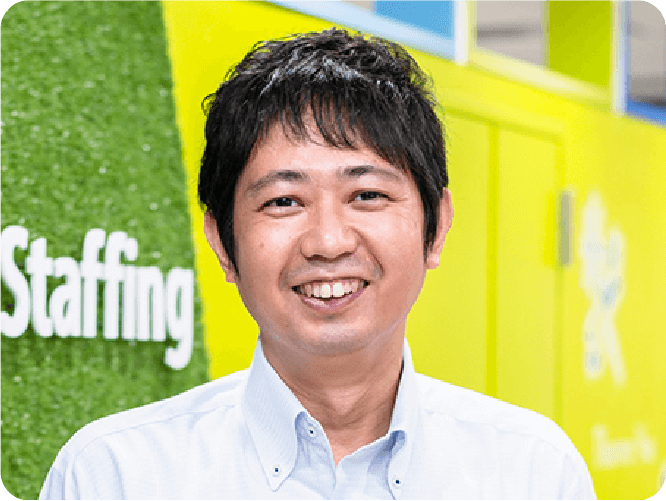
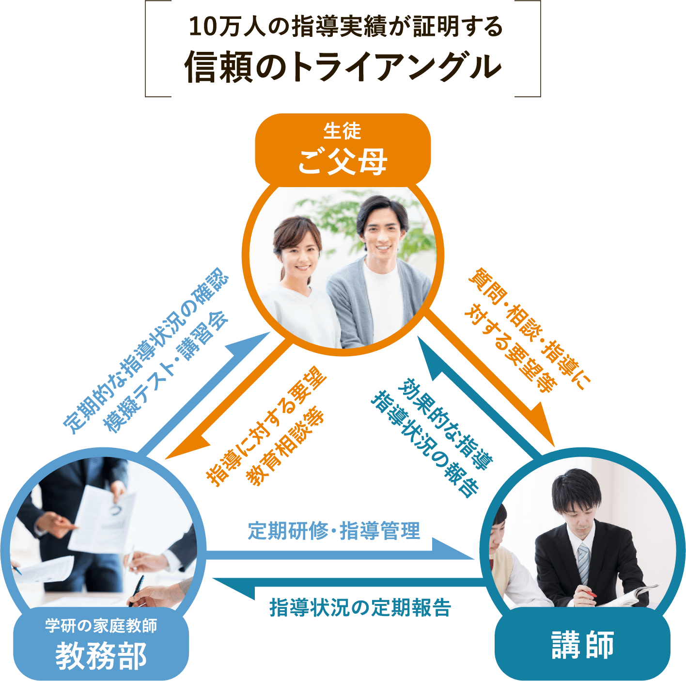

学研の家庭教師では、不登校のお子様をサポートする
専門のコース・講師陣・スタッフ体制を整えています。
学研グループの長い経験と多くの実績を生かし、
不登校のお子様一人一人に、勉強だけでなくメンタル面や生活面の
サポートをし、お子様やご両親の悩み相談にも親身にお答えします。
生徒様・保護者様の声
※プライバシーに配慮して、画像はイメージです。
小学校の高学年頃から不登校だった息子。
中学2年生の冬にオンラインゲームで知り合った年上のお友達に「高校だけは出ておいた方が良い」と言われ、少しエンジンがかかったようです。あまり期待はせず、一歩でも前進すればと幾つかの家庭教師会社に問い合わせました。
いきなりの体験授業で「これぐらいは分かる？」と言われる会社さんもあり、体験授業のたびに萎縮していく息子。
ところが、学研の家庭教師のスタッフの方は自分も不登校の経験があるお兄さんで、「まずは信頼関係が第一」と息子が好きなゲームの話からコミュニケーションを取ってくださり、みるみるうちに表情がほころんでいくのがわかりました。
その後も、その担当スタッフさんが担任になる先生を選んでくださり、授業がスタートした後も事あるごとに電話をくださったり、息子が担任の先生の方針に文句を言う時などは仲介するためにまた家庭訪問をしてくださったりしました。
そういった伴走のおかげで息子もやっとエンジンがかかったのか、オープンキャンパスでお邪魔した神戸野田高等学校に心酔し、「行きたい学校ができたから」と少しずつ登校復帰ができるようになりました。
現在は希望した神戸野田高等学校に入学し、なんと毎日登校できています。中学校の先生、学研さん、いずれが欠けても息子の今はなかったと思います。
真っ暗な暗闇の中、一筋の光を刺してくださった担当スタッフさんには感謝しかありません。ありがとうございました。

※プライバシーに配慮して、画像はイメージです。
息子が不登校になって１年経った頃、気持ちも落ち着いてきて、部屋から出て家族と和やかに過ごすようになってきたので、家庭教師の先生をお願いしたいと思いました。
お友達と接することもなくなってしまっていたので、お兄さんのような存在ができれば、外の世界と再びつながるきっかけになると思いました。
小６の夏休み明けから学校に行けなくなってしまったため、中学の勉強も全くしていない状態でした。息子に家庭教師の提案をしましたが、反発がすごく、体験授業も本人は部屋から出てこず、先生と親でお話させていただきました。私たちの楽しそうな声が聞こえたからか、帰り際に部屋から出てきて先生にお会いし、家庭教師をお願いしたいと言ってくれました。
その後、先生は授業のたびに、勉強の大切さ、勉強のやり方、将来のことなどを優しく根気よく息子に伝えてくれました。教科書を開くこともなかった息子が、今では自分から定期テストの勉強をしています。
学校への復帰はまだ道半ばですが、高校進学を目標に勉強にとても前向きです。親だけでは息子をこんなに変えることはできなかったと思います。
先生には本当に感謝しています。
※プライバシーに配慮して、画像はイメージです。
兄と妹、2人とも学研さんにお世話になりました。
兄は中学2年の3学期からOD(起立性調節障害)を発症し、不登校になりました。
「学校に行きたいとは思っている」「次のテストは頑張る」と言いながらも、当日になると結局登校できず、家族としても応援すれば良いのか「頑張らなくても良いんだよ」と声をかければ良いのか分からず路頭に迷っていました。
学研さんはとても親身になってくれ、不登校の傾向や過去に担当されていた生徒さんの進路、連携のある専門のクリニックをご紹介いただいたりと勉強だけではなく、心理面や生活面でも支えていただいたと思います。
最初は先生に顔を見せることも難しかった兄が、少しずつ表情が綻んで先生を心待ちにしている姿には涙がこぼれました。
中学校の担任も親身になってくれましたが、ここまで心を開いたことはありませんでした。
そのおかげもあり、高校進学では希望の桃山学院高校に合格することができました。
兄の影響もあって、小6から不登校になった妹も現在進行形で学研さんにお世話になっています。
こちらは、芯がしっかりしており、兄と違って「学校には行きたくない」「中学校には行かない」と明確な意思表示をしておりましたので、フリースクールに在籍をさせて高校進学の時に選択肢が狭まらないように学習面・心の面のサポートをしてもらっています。
妹も先生が来るのを大変楽しみにしており、本当に毎回子どもにぴたっと合った先生をご紹介いただく様子に「さすが学研」と家族ともどもファンになっています。これからも、引き続きよろしくお願いします。
※プライバシーに配慮して、画像はイメージです。
我が家には発達障害の診断を受けた大学1年生の息子がおります。
幼少期はとても活発で周りのお友達とも元気に交流しておりましたが、小学校高学年になると勉強の遅れや、お友達関係の違和感から支援学級への登校になりました。
担当の先生についていただけるもの、登校中ずっとという訳にはいかず自習の時間が苦痛だったようで次第に「これなら学校に行く意味がない」「家でも勉強できる」と引きこもるようになりました。
中学進学後、このままではいけないと藁をもすがる思いで「不登校専門対応」を謳っておられた学研の家庭教師に問い合わせをしました。
最初の電話対応から丁寧で「お父様、様子が類似するお子様も数多くサポートしているので大丈夫ですよ」と温かい言葉をかけていただいたことを今でも覚えています。
訪問いただいた専門員の先生も知識が豊富で、「特性をしっかりと理解して、試行錯誤しながら向き合っていくことが大切」や「発達障害傾向があっても大学進学できる」という言葉に励まされました。それから5年近く学研さんでお世話になり続けました。
高等学校は先生方にアドバイスをもらいながら、自主性・主体性を伸ばすために寮制度のある不登校・発達障害対応に強い竹田南高校を紹介していただきました。
高校進学後は、GWや夏休みで帰ってくる期間だけ先生にお越しいただき、サポートいただきました。
高校と御社のサポートもあって、大学は関西学院大学に進学することができました。
これから家庭教師を検討されている方の参考になれば幸いです。
保護者のみなさま、
こんなことで悩んでいませんか？
どこに、なんて相談したらいいのか
分からない。
学校に行っていない期間の
勉強の遅れを取り戻せるか心配。
このままでは高校に
進学できないかもしれない…
コミュニケーションが苦手な子供に
合う先生が見つかるか不安
学研の家庭教師に
すべておまかせください !
家庭教師で選ぶなら、学研!
「学研にしてよかった!」という声、
おかげさまで、いま、増えています。
悩みを解決する
学研の家庭教師の5つの強み
家庭教師なんてどこも同じなんて思っていませんか？
いえいえ、学研だからこそできる強みがあります。

WILL学園などの専門スタッフが
徹底フォロー
長い経験と多くの実績を生かし不登校コース専門のスタッフをご用意しています。
お子様の不登校の原因や期間、学年によって様々な対応が必要になりますし、そもそも、不登校の原因が分からないというお子様もいらっしゃるかと思います。そのお子様一人一人に合わせた内容の指導をご提案いたします。
さらに、お子様だけではなく、親御様の悩みにも親身に対応させていただきます。
お子様がこれから成長してく過程で、ご不安を抱えていることも多いのではないでしょうか？
勉強面に限らず、生活面や精神面のフォローも不登校専門コースならではの細かなサポートをしています。
どんなに小さなご相談でも気軽にお話し下さい。
また、学研の家庭教師が運営する通信制サポート校
「WILL学園」と連携をとり、高校受験や高卒認定取得のバックアップもしています。
通信制サポート校とは？
サポート校と通信制高校の両方に在籍しながら高卒資格の取得をサポートしていく学校です。
サポート校では、レポート提出、スクーリング、単位認定試験といった負担が軽減され無理なく高校を卒業することができます。
詳細はお問い合わせください。

進路決定率98.8%の実績
高校進学をサポートしております。
義務教育とは違い、高校進学にはお子様の受験意志と、試験のクリアが必要になります。
学研の家庭教師では、日々の学力アップはもちろんのこと、公立・私立の全日制高校の受験や、定時制、通信制、サポート校に至るまで、お子様の状況に合わせた受験情報の提示や対策をとっています。
公立高校に進学を希望される場合、出席日数が重要となります。ただし、学校に通えないお子様の場合、通わなくても出席扱いとしてもらう方法や、受験時に出席日数を項目として取り扱わない高校も存在します。
このような受験情報の収集や受験対策をとることで、不登校のお子様の進学率を高い数字で実現しました。
過去10年間で750名の不登校のお子様（中学生）が高校受験を迎え、その内741名のお子様が高校進学という目標を達成してきました。
また、高校に進学してからのフォローや高校に通えなくなってしまったお子様のフォローも行っております。
※お住まいの都道府県によって異なるため、詳しくはお問合せください。

安心と充実の講師陣
数多くの講師の中からお子様にとってベストの講師を探し出します。
ただ単に勉強を見るだけではなく、親御様には話しにくいお子様の悩みや不安にも親身に耳を傾けます。
講師選考の際に大切にしているのは、お子様の状況を理解し一緒に歩むことを約束できるということです。
まず、お子様と親御様に講師のタイプや性別、年齢等、細かい希望を出していただき専門スタッフがぴったりの講師を紹介します。
もし万が一希望に合わない講師だった場合は、即時に新しい講師に変更させていただきますのでご安心ください。
講師に対しても、細かい研修を徹底しており勉強の指導力だけではなく、メンタル面のサポート、生活面のサポートに至るまで細かい指導をしています。
お子様に合わせた
オーダーメイド指導
お子様の状況に合わせて細かなサポートを行います。
一言で不登校といってもその原因や期間は様々です。
学研の家庭教師では、お子様を決まった型にはめ込むのではなく、一人一人に合わせたオーダーメイドでの講師選抜や研修、指導方針、接し方など徹底して取り組んでいます。
また、お子様一人一人に目標も設定し、講師とともに達成する喜びを伝えていくようにしています。「遅れている分を取り戻したい」「学校に通えるようになりたい」「高校進学をしたい」「人と話すのが苦手になってしまい、その克服をしたい」などその目標もお子様によって様々ですが、ご心配の点は気軽にご相談ください。
オーダーメイド指導カリキュラムの一例
最初は、先生と会うのも難しい状況で、家庭教師を 始めることにも後ろ向きだったお子様の場合
お子様に合わせて
メンタルサポートの徹底
学研の家庭教師は、親御様や学校の先生とは違った立場からお子様たちのサポートを心掛けています。
すぐに目に見える結果を求めるのではなく、お子様が課題や困難に取り組む姿勢、過程を第一に考えています。不登校のお子様に多くみられるのが最初の一歩に対して臆病になっていることです。学研の家庭教師は、お子様が不安になってしまうことも理解した上で、一緒になってスタートを切るパートナーとしての立場を心掛けています。
そこで、学研の家庭教師では熱意にあふれる者を中心にお子様との相性を考えた人選をし、指導力はもちろんのこと、お子様との接し方や話し方などの研修も徹底して行っております。
ただし、決してマニュアル化するのではなくお子様の状況や性格、親御様からのヒアリングをした上で取り組ませていただいています。
また、指導が開始してからも講師からの報告や、ご家庭への細かな電話連絡（場合によっては家庭訪問も行います）など、その後のフォローもしっかり行っておりますのでご安心ください。
だから、
学研の家庭教師は
選ばれ続けています!
まずは、資料請求からはじめてみませんか？
早く始めれば始めるほど、大きく差は開きます。
不登校コース担当講師の声

まずアプローチしたことは、
「なんでも一緒にやること」
僕が担当していた子は現在中学2年生ですが、コミュニケーションが苦手で小学校の頃から不登校気味でした。中学に入学するとその傾向が顕著になり、ほとんど学校に通えない状態になっていました。学校に行かずインターネットやゲームをする毎日、生活リズムもバラバラでした。
そんな彼にまずアプローチしたことは、なんでもいっしょにやること。
彼は大のゲーム好きだったので、訪問して最初にやることはゲームでした。元々人と話すことが大の苦手な子だったのですが、ゲームが下手な僕の甲斐もあって、得意分野のゲームについてはよくしゃべってくれました。そうした他愛ない話の中から、ぽつりぽつりと彼がこれまで辛かったことや悩みを打ち明けるようになりました。「本当は学校に行きたい」と。
学校に行かない日々、彼がどんな思いで日常を過ごしているのかと思うと胸が熱くなりました。こういった会話から彼はコミュニケーションに臆病でなくなり始めました。
人間関係の不安もさることながら、勉強面の不安もかなりのウェイトを占めていたので、小学校の復習からじっくりとやっていきました。元々勉強に対する意欲はあった子なのですが、好きな教科にしか手を付けず、科目間による学力差は大きいものでした。特に数学はまったくで、正負の計算、分数の計算などはじっくり時間をかけました。実際の学年とは違う学年の学習になりますので、彼自身焦っている様子もありました。ですから僕は「当たり前」という言葉をネガティブに使わないように心掛けました。人はみんな違って「当たり前」、だから学校に行くのは「当たり前」なことではないということを何度も伝えました。
彼が劣等感を感じない様に考えて指導をしたかったからです。
実際、不登校というのは劣等ではないのですから。
僕が見る限り、不登校の子は自分に対する目線が高く、「本当はこのぐらいできないといけないんじゃないか・・・」という思いからマイナス思考になってしまうので、指導方針としては目標設定をシンプルにし、より具体的に、また長期的視野をもって取り組むようにさせました。今では少しずつではありますが、学校にも通いはじめ、高校進学にも前向きに考えるようになっています。
コース一覧・料金
学研の家庭教師は、安心の『月謝制』。
高額教材のセット販売などもございません。
-
不登校サポートコース
1時間あたり 5,170円（税込）～
お子様たちの目標は「学校に復帰したい」、「高校受験に合格したい」、「基礎学力をつけたい」、「社会性を身につけたい」など様々です。
そういった目標に合わせて、一人一人に合った計画やプランを考え、お子様と共に実践していきます。
※授業内容のご要望により、料金は変動いたします。
※オンライン授業の料金は上記と異なります。詳細はお問合せください。
一人ひとりにベネフィットする教育を可能にするために
「学研」の家庭教師は講師の質にこだわります

「すべては子どもたちのために」それが私たち、学研・塾グループ共通の想いです。
そして、子どもたちに直に接するのは、先生 ― つまり講師。登録数10万人超の豊富な講師陣から多様なニーズに対応します。
体験指導までの流れ


{kind=link}
{kind=link}
{kind=link}
{kind=link}
{kind=link}

カウンセリングと
体験指導
（トータル所要時間：約60分）

大切なのは、家庭教師というスタイルがお子様
に合っているかをしっかり判断することです。
「自分に合った勉強のやり方」をみつけることが
成果につながります。
まずは家庭教師の雰囲気を味わっていただき、
お子様の反応を見てください。
※当日のお子様の調子によって、「体験指導」を
お子様や保護者の方からのヒアリングなどに切り替えるこ
ともできます。
学研の家庭教師体験レッスンの
3つのポイント
- ❶ お子様の現状が把握できます
- ❷ お子様にぴったりのサポート方法が
見つかります - ❸ 今までの家庭教師との違いがわかります
ご入会を強くおすすめすることはありませんので、
ご安心ください。
よくあるご質問
大切なお子様の勉強方法ですから不安なことも多いはずです。
その他、ご不明な点などございましたら、お気軽にお問い合わせください。
成績についてのご質問
ほんとうに成績は上がりますか？
学研の家庭教師は、教務部に対して毎月の報告を義務付けております。「指導報告書」「定期ミーティング」「個別ミーティング」のシステムにより、お子様の指導状況をチェックし、目標達成までの学習管理を教務部のバックアップにより綿密に行いますので自主学習の習慣と共に学力が向上していきます。
受験対策は大丈夫ですか？
1対1だと競争心がなくなったりはしませんか？
弊社は、受験対策として模擬テストをおすすめしており、 夏期講習・冬期講習も一部教務センターにて実施しております。 偏差値や志望校到達率の把握や単元別の習熟度チェックから、テスト慣れ、 会場慣れに至るまで、受験生のサポートはお任せください。
家庭教師についてのご質問
家庭教師は、アルバイト感覚ではありませんか？
弊社では多くの登録希望家庭教師の中から、学力だけでなく指導力や責任感等の家庭教師としての適正検査「YGPI」を実施して合否を決めております。紹介後も日々の指導状況から毎月の指導報告を義務付けるなど、しっかりとした管理をしておりますのでご安心ください。
本人との相性は合うのでしょうか？
要望や条件を詳しくお伺いし、専門のスタッフが選考にあたり、 ミーティングをした上で紹介しておりますので安心です。弊社は30年以上の実績により家庭教師の登録数も豊富なので、お子様にピッタリの家庭教師を紹介できるシステムとなっております。
家庭教師交代、進路相談などはできるのでしょうか？
大丈夫です。何かありましたら、すぐに弊社へご連絡ください。教務部による管理体制を整えておりますので、担当社員・スタッフが迅速に対応いたします。家庭教師個人ではまかなえないことを全て教務部でサポートさせていただきます。
学び方についてのご質問
特別な教材を購入しないといけないのですか？
弊社は、高額教材のローン契約による販売などは一切ありません。 お子様がお持ちの教科書等で指導を行うことができます。
勉強部屋がないのですが？
ご安心ください。リビングなどでも指導は可能です。また、自宅以外の場所で授業を希望される場合には、近隣の公共施設や家庭教師宅指導もございます。まずは一度ご相談ください。
弊社についてのご質問
テスト前の短期間だけでも申し込みできますか？
テスト前や、夏休みだけなどの短期間もお任せください。目的に応じた指導計画を立て、集中特訓を組むことができます。
病気で休んだり、用事で休んだりすると授業料はどうなりますか？
休んでしまった場合はその分の振替授業を行えます。それによって別途料金がかかることもございません。
やめたくても簡単にやめられないのではないですか？
弊社は1ヶ月前までに退会の申し出をいただければ、 いつでも退会することができます。その場合解約料は必要ありません。 また、退会申告できない場合であっても、1ヶ月分の指導料より高いお金はいただきません。 もちろん、保証金等もございません。